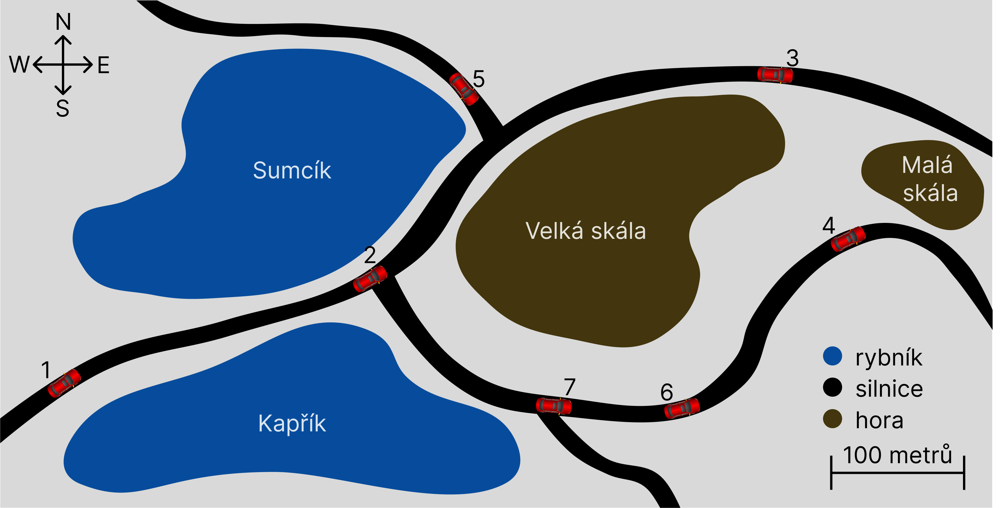

Automobily dlouhá léta přijímaly elektromagnetické signály
pouze pro pobavení posádky a navigační účely.
S příchodem 5G sítí se ale díky nízké latenci objevily
další možnosti využití komunikace mezi automobilem
a okolím. Konkrétně se jedná o zvýšení bezpečnosti
a efektivity provozu s cílem dosáhnout plně
autonomních vozidel.
Komunikaci vozidel s okolím je možné shrnout označením
„V2X“. Podskupinou je komunikace mezi vozidly samotnými
označovaná jako „V2V“ a také komunikace vozidla
s infrastrukturou neboli „V2I“. V těchto oblastech
probíhá většina vývoje, ale nově vznikají i další
oblasti, jako je „V2P“, umožňující obousměrnou komunikaci mezi
vozidly a chodci.
Komunikace V2V je decentralizovaná a veškerá data tedy
putují pouze mezi zúčastněnými vozidly. Je tak možné mezi
sebou včasně sdílet důležité informace, jako jsou varování
před překážkami na silnici, nehodami, počasím nebo změnami
v provozu. V první fázi vývoje bude možné V2V
používat pouze za přímé viditelnosti mezi vozidly a na
vzdálenost několika set metrů. Vozidla mezi sebou ale také
budou moci vytvořit mesh, ve kterém si budou informace
předávat řetězovitě. Bude tedy možné dosáhnout přenosu
i na delší vzdálenosti za pomoci prostředníků.
V následující úloze budeme pracovat s V2V mesh systémem
s následujícími omezeními. Každé vozidlo musí mít přímou
viditelnost na další vozidlo, se kterým chce komunikovat, na
maximální vzdálenost 300 metrů. Mesh je také omezen. Konkrétně
tak, že se informace může dostat k vozidlu maximálně přes
jedno zprostředkující vozidlo. Pokud by vozidlo chtělo zjistit
například stav vozovky co nejdále před sebou, tak se může
dostat k informaci o vozovce maximálně 600 metrů. To
za předpokladu, že první vozidlo je vzdáleno přesně 300 metrů
a další vozidlo opět 300 metrů od prvního. Zároveň ale
platí, že se vyberou vozidla přenosu tak, aby byla požadovaná
informace přenesena vždy, pokud je to možné. V předešlém
případě bychom tedy ignorovali vozidlo, které jede ve
vzdálenosti 100 metrů, když existuje vozidlo vzdálené 300
metrů, které je schopné lépe přenést požadovanou informaci. Na
základě mapy níže vyberte odpovědi, které obsahují pouze
pravdivá tvrzení. Platí, že přes hory není možné komunikovat,
ale přes vodní plochy ano a ke zjištění stavu vodní
hladiny musí být vozidlo nejdále 50 metrů od nejbližšího břehu
dané vodní plochy.
